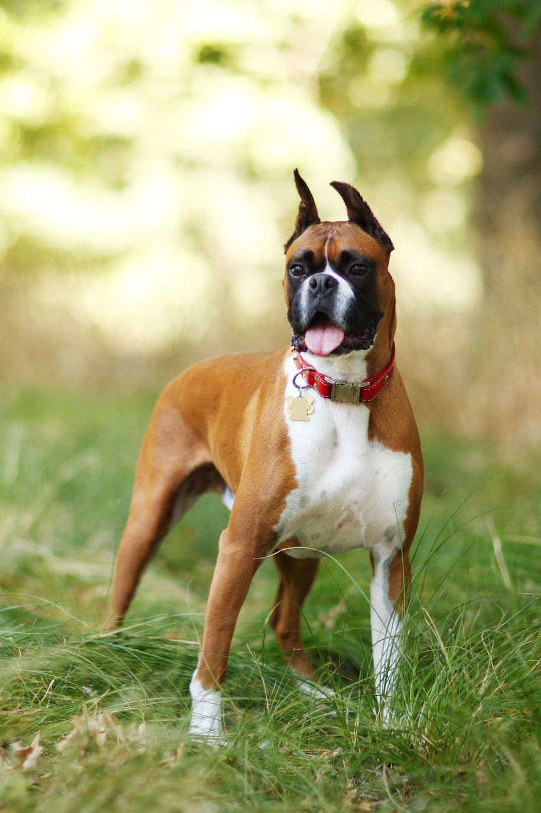

Meet Dave
Meet Dave, a 2-year-old Bulldog mix. Dave is a shy fellow with a gentle
disposition who loves to go on walks. Time spent with him just sitting is
time well spent. As he warms up, he prefers a soft and slow touch. He would
do best in a calm environment with a mellow resident dog who can boost his
confidence and show him the world doesn't have to be a scary place. Meet this
beautiful boy at pet shelter today.

Meet George
Meet George, a handsome 12-year-young boy tabby, who can't wait to meet you! George came
to the shelter, through no fault of his own, when his previous owner could no longer take care of
him. It's been a bit stressful for George having to get used to his new temporary living situation,
and he may seem a little shy at first. Once he knows you're his friend, though, George will warm
up to you quickly. He loves it when you give him gentle scratches under his chin and chest, and
he'll come alive when you toss him a rattling toy. He is quite the looker, but he gets a lot of
compliments about his feet because he has extra toes. George has lived with dogs and adult children,
but he would love to find a new home that is on the mellow side.

Meet Bean
Meet Bean, a 2-year-old Boxer/Boston Terrier Mix! Bean is a sweetheart who has a calm
disposition and polite manners. She is a happy girls who loves to go on adventures.
She is very intelligent and likes treats, which makes her a great candidate for further training.
She already knows her sit command! Looking to meet your next best friend? Come meet Bean today at
our pet shelter!

Meet Bella
Meet Bella, a 2-year-old grey and white short-haired girl who was surrendered to us through
no fault of her own. Bella is friendly and sweet, but will need a patient adopter to help
her confident side shine through. She has lived with other animals, but would probably do
best in a quiet, adult only home. Come meet Bella today at the shelter!

Meet Dotti
Meet Dotti, a 6-month-old Cattle dog, who would love to be your new BFF! This happy
wigglebum loves a good long play, and will happily fetch all the toys you can throw for her.
She also loves a good nuzzle with her people & will trade plenty of sweet kisses for one. If
you have room in your heart and home for this sweet girl, then come meet her today at the
pet shelter — you'll be glad you did!

Meet Honeydew
Honeydew, a 2-year-old orange and white tabby girl can't wait to meet you!
This playful petite little lady came all the way here from Louisiana to find her family.
She adores a gentle brush and warms up to people quickly.
Come in to our petshelter to meet Honeydew today — her caramel eyes and sweet meow will have you at hello!